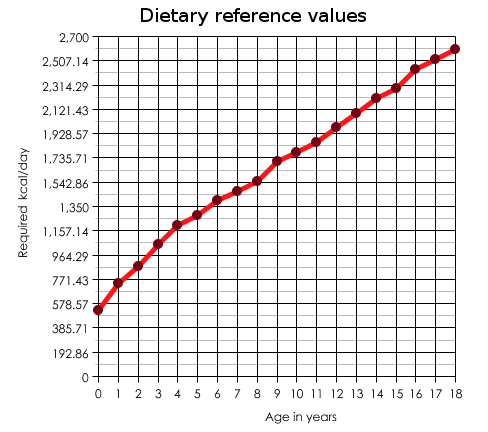

TDEE calculation
Terminologies and calculation principle
We'll start off with some basic terms you'll encounter here:
TDEE means Total Daily Energy Expenditure
BMR means Basal Metabolic Rate
PAL means Physical Activity Ratio
The daily amount of food necessary to be consumed for your body (TDEE) is determined by your physical activity ratio (PAL) and your Basal Metabolic Rate (BMR). The latter of which is higher/lower depending on whether you're tall, or short. Being male, or female is also often said to make a difference (and as such, the Harris-Benedict equation comes in 2 forms; one for a male and one for a female. The formula goes as follows:
* Men: BMR = 66 + (13.7 X weight in kg) + (5 X height in cm) - (6.8 X age in years)
* Women: BMR = 655 + (9.6 X weight in kg) + (1.8 X height in cm) - (4.7 X age in years)
), yet the difference is still quite small. Due to the small difference, in the graph, we equalised things for men and women.
Doing the actual calculation
Just below this text, you'll find the graph with the equalised values. | Age in years: | kcal/d: | 0 | BMR:375 x PAL:1,40 = 525 TDEE |
| 1 | BMR:525 x PAL:1,40 = 735 TDEE |
| 2 | BMR:625 x PAL:1,40 = 875 TDEE |
| 3 | BMR:750 x PAL:1,45 = 1050 TDEE |
| 4 | BMR:825 x PAL:1,45 = 1196,25 TDEE |
| 5 | BMR:850 x PAL:1,50 = 1275 TDEE |
| 6 | BMR:900 x PAL:1,55 = 1395 TDEE |
| 7 | BMR:950 x PAL:1,55 = 1472,5 TDEE |
| 8 | BMR:1000 x PAL:1,55 = 1550 TDEE |
| 9 | BMR:1100 x PAL:1,55 = 1705 TDEE |
| 10 | BMR:1150 x PAL:1,55 = 1782,5 TDEE |
| 11 | BMR:1200 x PAL:1,55 = 1860 TDEE |
| 12 | BMR:1275 x PAL:1,55 = 1976,25 TDEE |
| 13 | BMR:1350 x PAL:1,55 = 2092,5 TDEE |
| 14 | BMR:1425 x PAL:1,55 = 2205,75 TDEE |
| 15 | BMR:1475 x PAL:1,55 = 2286,25 TDEE |
| 16 | BMR:1575 x PAL:1,55 = 2441,25 TDEE |
| 17 | BMR:1625 x PAL:1,55 = 2518,75 TDEE |
| 18 | BMR:1675 x PAL:1,55 = 2596,25 TDEE |
For the PAL's: the PAL's of people age 0 to 18 will probably be correct, yet can be off in cases where the person in question is extremely active, ... To correct the PAL's (of people aged 0-18 and for those of older people), use the PAL table below:
| Mean activity level | P.A.L. range | Average P.A.L. | Description of activities |
| Sedentary | 1,175-1,375 | 1,2 | No exercise, desk job; reading, watching TV, writing, calculating, playing cards, listening to music |
| Lightly active | 1,375-1,550 | 1,4 | Little exercise, desk job; sewing, knitting, playing piano, cooking, washing up, ironing, writing, calculating, playing cards, dressing, undressing, showering, ... |
| Moderatly active | 1,550-1,725 | 1,6 | Moderate exercise, non-desk job; easy household chores, dusting, cleaning, washing by hand, cooking, hairdressing, playing pool, driving, bowling, general office work. |
| Very active | 1,725-1,900 | 1,8 | Hard exercise, physically more demanding job; vacuuming, making beds, slow walking, cricket, tailoring, shoemaking, electrical, machine tool operating, painting, decorating. |
| Extra active | 1,900-... | 2,0 | Very hard exercise, physically demanding job; Mopping floor, gardening, cleaning windows, playing tennis, sailing, moderate swimming, cycling, slow jogging, moderate walking, playing golf, carpentry, joinery, bricklaying. |
For the dietary reference values for people with an age above 18, the extra number of years above 18 are multiplied by 6 (average 6,8 and 4,7 of male/female Harris-Benedict formula) and added to the BMR. Thus, older people will generally require a bit more calories than younger people (thus contrary to popular beliefs), but it is likely that the end result will nonetheless be smaller, since older people often become less active, and thus the PAL will generally reduce.
Also note that the following TDEE's need to be added to the TDEE of women which are pregnant (and thus require more calories):
Months pregnant-- kcal/d to be added:
* 0-3 -- BMR:392,85 x PAL:1,40 = 550 TDEE
* 4-7 -- BMR:464,28 x PAL:1,40 = 650 TDEE
* 7-9 -- BMR:500 x PAL:1,40 = 700 TDEE
Further reading (references)
Where the table data comes from:
The table data was derived from the UN tables at http://www.fao.org/docrep/007/y5686e/y5686e00.HTM#Contents
However, averages where made from the tables there, in order to create a unisex table. Keep in mind though that the table is only suitable as a reference value, and depending your genetic makeup (depending on whether your smaller/larger than average, male/female, weigh more/less, have more lean body mass (muscle tissue), ...), the BMR may differ and you will thus require more/less calories than the average presented here. If you're uncertain, use the Harris-Benedict equation instead, rather than relying on the values presented above.
Data from 0-9 months was composed by taking averages of boys and girls from Table 3.2, Daily energy requirementc
kcal/d data from 1-18 years was composed by taking averages of boys and girls from Table 4.2 and Table 4.3 BMRestc, kcal/d Note that "year 0" isn't shown, but was derived from table 3.2, also note that the PAL data was also averaged, yet no longer followed from year 7 onwards. The PAL's of these were: 1,60 , 1,65 , 1,65 , 1,7 , 1,75 , 1,75, 1,8 , 1,8, 1,8 , 1,75 , 1,75 and the caloric intake was thus: 1600, 1815, 1897, 2040, 2231, 2362, 2565, 2655, 2835, 2844, 2931 respectively. However, concluding from http://www.weightlossforall.com/calculate%20cals.htm these PAL's are by far too high since for comparison, it can be assumed that the activity level would keep to "moderately active", rather than up to "very active". The PAL only refers to the activity level and not any metabolic changes (these are incorporated only to the BMR).